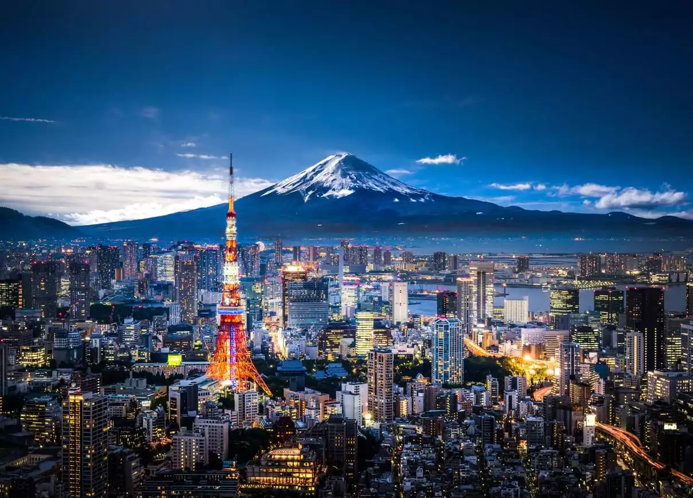
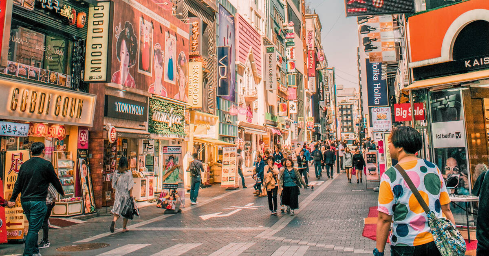

The Maldives is a nation of islands in the Indian Ocean, that spans across the equator. The country is comprised of 1192 islands that stretch along a length of 871 kilometers. While the country covers an area of approximately 90,000 square kilometers, only 298 square kilometers of that is dry land. The islands are grouped into a double chain of 26 atolls. The Maldives is famous for a number of reasons, including its vibrant culture, pristine beaches, sprawling greenery, and fascinating landmarks. Apart from the numerous enchanting landmarks, Maldives is also famous for water sports and other adventure activities. Maldives is well known for its crystalline waters with beautiful shades of blue, swaying palm trees, and sparkling white sand under the limitless blue skies. With good weather throughout most of the year, Maldives makes a great choice for an idyllic beach getaway. It is the ultimate dream of luxury and tranquility.
2. Tokyo, Japan

Japan is one of the most popular travel destinations for the region. Japan maintains a strong sense of traditional and cultural history while also being a world leader in innovative technology and fashion. Tokyo, in particular, is an exciting and bustling city that boasts a wide range of activities. Staying in Tokyo can be a rich cultural experience and give you a host of new memories. Having an open mind as you move through the city can lead you to interesting shops, restaurants and just sights found off the beaten path. You can enjoy a traditional cultural experience or try something innovative. From historical sites to pop culture spots, from skyscrapers to nature parks, Tokyo has so many things to offer. Tokyo can’t be described in one single word. With its rich history and lively present, there are many things to do in Tokyo ranging from nature spots to cityscapes, and from historical sites to kawaii pop culture. Visit several of the spots we mentioned above to get a whole experience of Tokyo.
3. Seoul, South Korea

Seoul is riding a wave of creativity. From fashion to food, architecture to art, the city has become a creative haven for those looking to make their mark. It's packed with trendsetting residents who have helped create a future-proof city that still honors its distinctive past. South Korea’s capital might be home to some 10 million people, but you can easily escape the crowds by enjoying the city’s wide range of outdoor opportunities. Add some real adventure to your trip by heading to Bukhansen National Park, which is just a 45-minute subway ride away from central Seoul. Here, you’ll find hiking trails for all levels, including the Bukhansanseong path, which takes walkers to the summit of South Korea’s tallest mountain, Baegundae. You’ll also find several idyllic green spaces dotted across the city, including the Seoul Forest, which produces picture-perfect cherry blossoms in the spring. While Seoul is arguably the most thrilling city in South Korea, it's not the only large city that's worth a visit. Despite its small size, South Korea has plenty of exciting cities from north to south.